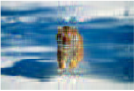

Un projet qui voit plus clair
Tout est parti d'une question simple : comment réduire la taille d'une image sans en perdre l’essence ? Avec Hoda, on a plongé dans le monde des matrices pour trouver une réponse élégante et mathématiquement rigoureuse : la décomposition en valeurs singulières.
Le cœur du projet repose sur l’idée que chaque image peut être décomposée en une somme de motifs élémentaires. En ne gardant que les plus significatifs, on parvient à reconstruire l’essentiel... avec beaucoup moins de données. C’est un peu comme résumer un roman sans en trahir l’histoire.
Qui sommes-nous ?
Auteurs : Doubli Hoda & Assia AIT TALEB – INSA Rouen, GM3
Date : Février 2024
1. Ce que contient le projet
| Fichier / Dossier | Description |
|---|---|
| algo.py | Nos fonctions maison pour la SVD, sans bibliothèque externe |
| main.py | Script de lancement CLI : choix d'image et compression |
| images | Images tests (lena, mandrill, tigre) |
| report_SVD_Compression.pdf | Rapport complet avec théorie, démonstrations et résultats |
| README.md | Résumé rapide du projet |
2. Comprendre la magie de la SVD
- SVD : toute matrice A peut s’écrire comme A = UΣVᵀ
- Tronquer Σ revient à « compresser » sans trop perdre en qualité
- Le théorème d’Eckart-Young garantit la meilleure approximation possible
3. Comment l’utiliser
python main.pyLe programme vous demandera de choisir une image et un rang de compression k. Ensuite, il génère l’image compressée correspondante.
Visualisation interactive de la compression
Comparez deux images compressées avec différents rangs k :
Lena

Tigre
5. Ce qu'on a appris
- La SVD, ce n’est pas qu’une formule : c’est un outil puissant pour la compression
- Nos propres fonctions SVD, testées contre NumPy, ont bien tenu le choc
- Choisir
kest un équilibre entre qualité visuelle et gain mémoire